3D-Balkendiagramm auf abgeflachter Oberfläche
3D-Bar-FlatSurf
Dieses Diagramm ist eine Kombination eines abgeflachten 3D-Oberflächendiagramms der US-amerkanischen Staatenkarte und eines 3D-Balkendiagramms, das die städtische Bevölkerung darstellt, wobei die Balken den Längen- und Breitengrad der Städte angeben.
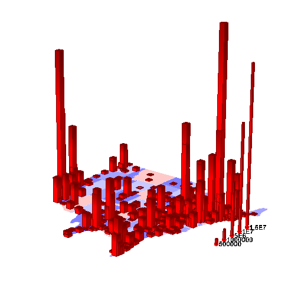
Origin-Version mind. erforderlich: Origin 9.0 SR0
Was Sie lernen werden
Dieses Tutorial zeigt Ihnen, wie Sie:
- ein abgeflachtes 3D-Oberflächendiagramm zeichnen.
- ein 3D-Balkendiagramm zu einem existierenden 3D-Oberflächendiagramm hinzufügen.
Schritte
Dieses Tutorial basiert auf dem Projekt Tutorial Data: <Origin-Verzeichnis>\Samples\Tutorial Data.opj.
- Öffnen Sie das Projekt Tutorial Data und navigieren Sie zu dem Ordner Contour from Matrix im Projekt Explorer.
- Aktivieren Sie MBook1E und wählen Sie Zeichnen: 3D: 3D-Farbabbildung im Hauptmenü. Es wird ein Diagrammfenster erzeugt.
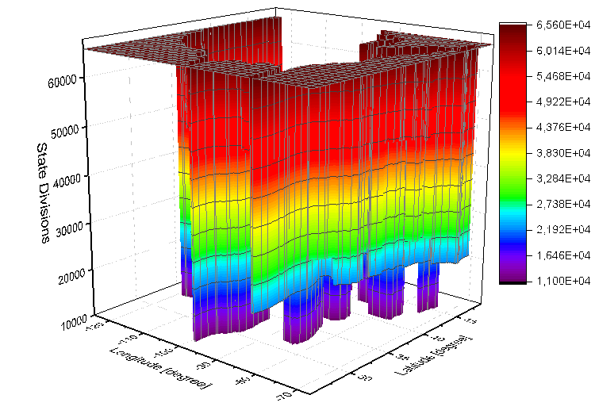
- Klicken Sie zum Öffnen des Dialogs Details Zeichnung doppelt auf das Diagramm. Aktivieren Sie auf der Registerkarte Oberfläche die Optionen Flach und Z-Versatz nach Prozent des Skalierungsbereichs und legen Sie den Z-Versatz auf 0 und die Transparenz auf 50 fest.
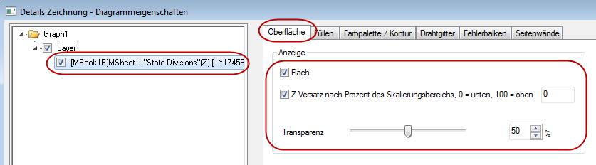
- Wechseln Sie zur Registerkarte Farbplatte/Kontur und klicken Sie auf die Überschrift Ebene, um den Dialog Ebenen festlegen zu öffnen. Legen Sie in diesem Dialog die Anz. Hauptebenen auf 8 und die Anz. Nebenebenen auf 0 fest.
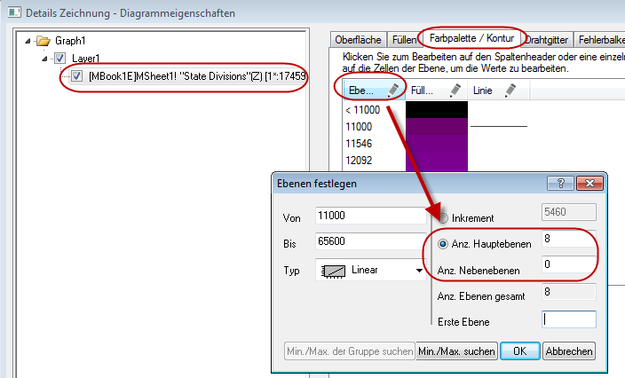
- Klicken Sie auf OK, um den Dialog zu schließen. Klicken Sie auf die Überschrift Füllung, um den Dialog Füllung zu öffnen. Wählen Sie im Dialog Füllung die Option Palette laden, klicken Sie auf die Schaltfläche zum Auswählen einer Palette, wählen Sie die Palette Thermometer und deaktivieren Sie das Kontrollkästchen Mit Palette verknüpfen.
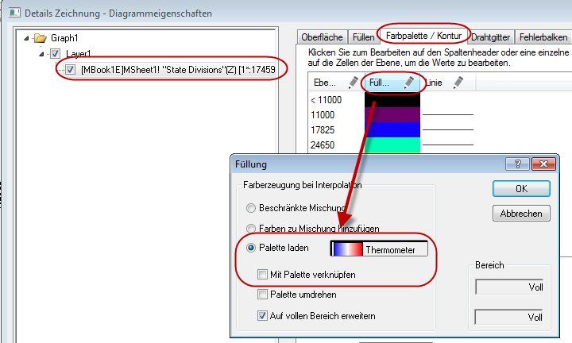
- Klicken Sie auf OK, um den Dialog Füllung zu schließen. Klicken Sie auf die Füllungszelle der letzten Ebene und setzen Sie ihre Farbe auf Weiß.
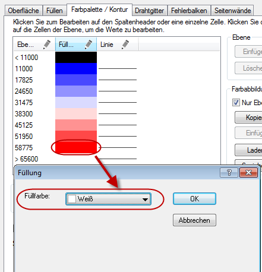
- Deaktivieren Sie das Kontrollkästchen Konturen aktivieren auf der Registerkarte Farbpalette/Konturen.
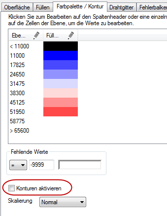
- Wechseln Sie zur Registerkarte Drahtgitter und deaktivieren Sie das Kontrollkästchen Aktivieren.
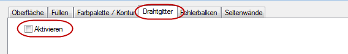
- Wählen Sie Layer1 im linken Bedienfeld und wechseln Sie zur Registerkarte Beleuchtung im rechten Bedienfeld. Deaktivieren Sie die Kontrollkästchen XY, YZ und ZX.
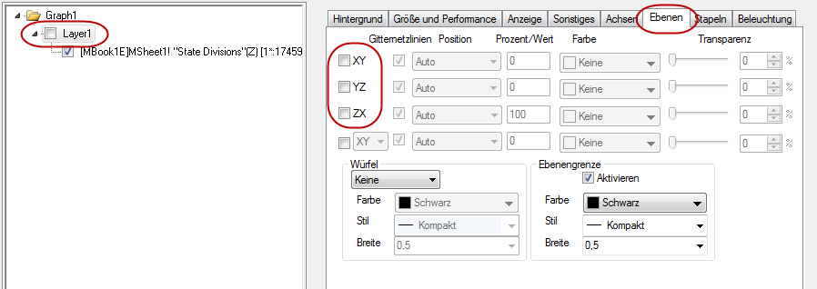
- Bestätigen Sie mit OK, um den Dialog Details Zeichnung zu schließen. Klicken Sie mit der rechten Maustaste auf das Layersymbol und wählen Sie im Menü Setup Diagramm. Wählen Sie im Dialog Diagrammeinstellungen die Option Arbeitsblätter im Ordner unter Verfügbare Daten, 3D-Balken als Diagrammtyp und USMetropolitan als Quelldatenblatt. Legen Sie Longitude, Latitude und Population (Längengrad, Breitengrad und Bevölkerung) als X, Y bzw. Z fest. Klicken Sie auf Hinzufügen, um das 3D-Balkendiagramm in den aktuellen Layer einzufügen.
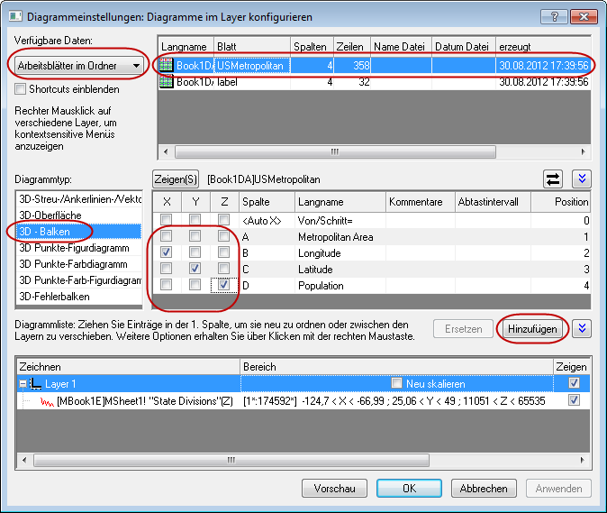
 |
Um alle drei Bedienfelder im Dialog Diagrammeinstellungen anzuzeigen, erweitern Sie bitte das Bedienfeld Diagrammtyp, indem Sie auf klicken, und erweitern Sie das Bedienfeld Verfügbare Daten, indem Sie erneut auf klicken.
Bitte lesen Sie unter Mit Hilfe des Dialogs Diagrammeinstellungen zeichnen weitere Informationen zu diesem Thema.
|
- Klicken Sie auf OK, um den Dialog Diagrammeinstellungen zu schließen. Wählen Sie Grafik: Neu skalieren, um das Diagramm neu zu skalieren.
- Klicken Sie zum Öffnen des Dialogs Details Zeichnung doppelt auf das 3D-Balkendiagramm. Setzen Sie auf der Registerkarte Muster die Farbe des Rands und der Füllung auf Rot und legen Sie die Gradientenfüllung, wie unten gezeigt, fest.
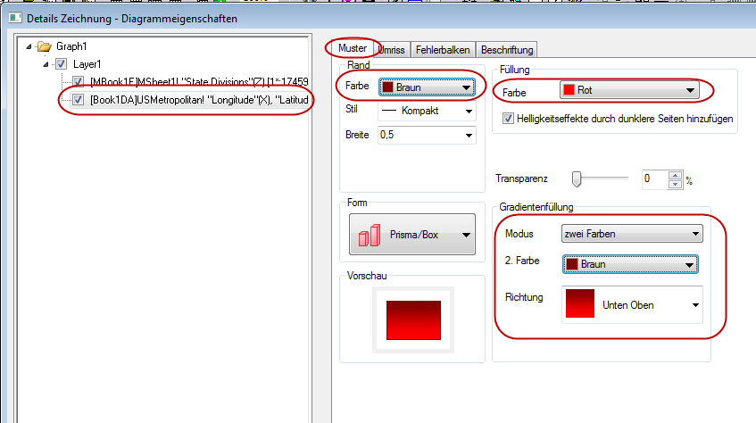
- Bestätigen Sie mit OK, um den Dialog Details Zeichnung zu schließen. Klicken Sie im Diagrammfenster mit der rechten Maustaste auf das Layersymbol und wählen Sie Inhalt Layer im Kontextmenü, um den Dialog Layerinhalt zu öffnen. Wählen Sie in diesem Dialog Arbeitsblätter im Ordner in der Auswahlliste oben links und fügen Sie die Spalten Col(C) und Col(D) als 3D-Balkendiagramm bzw. 3D-Punktdiagramm aus dem Blatt Label in den aktuellen Layer ein.
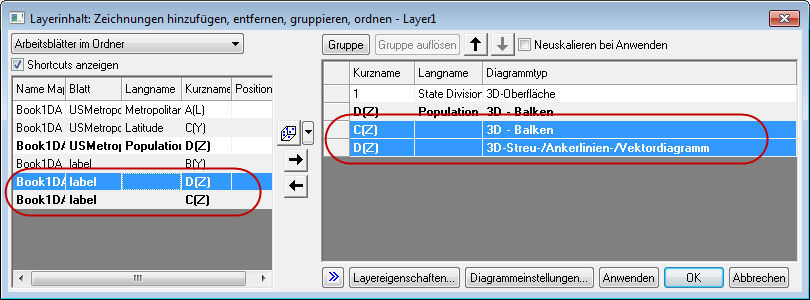
- Bestätigen Sie mit OK, um den Dialog Layerinhalt zu schließen. Klicken Sie zum Öffnen des Dialogs Details Zeichnung doppelt auf das 3D-Balkendiagramm. Wählen Sie die dritte Zeichnung im linken Bedienfeld, wechseln Sie zur Registerkarte Muster und wenden Sie die unten abgebildeten Einstellungen an.
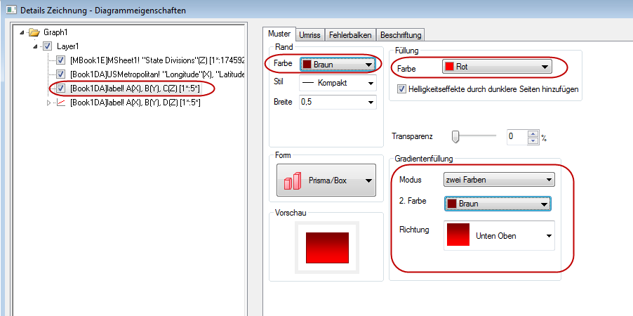
- Wechseln Sie zur Registerkarte Umriss und setzen Sie die Breite (in%) auf 15, wie unten zu sehen.
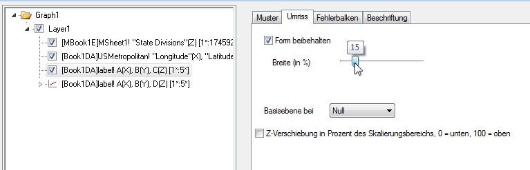
- Wählen Sie die vierte Zeichnung im linken Bedienfeld, wechseln Sie zur Registerkarte Beschriftung und wenden Sie die unten abgebildeten Einstellungen an.
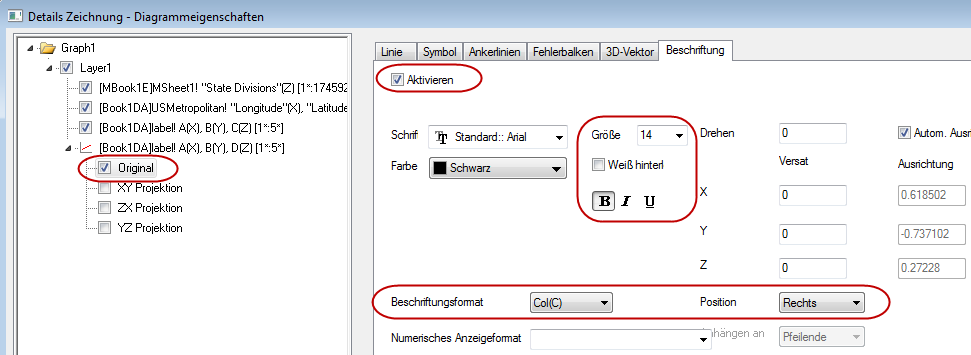
- Das erzeugte Diagramm sollte am Ende folgendermaßen aussehen.